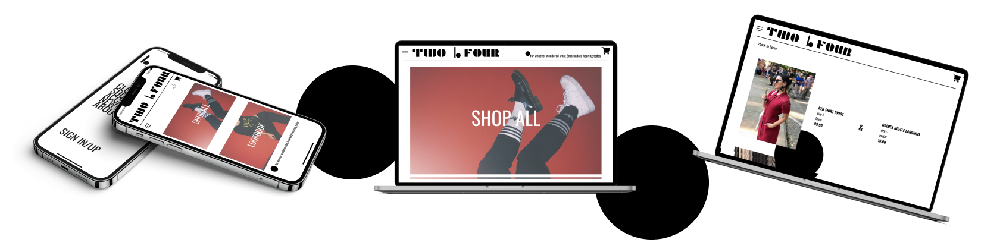
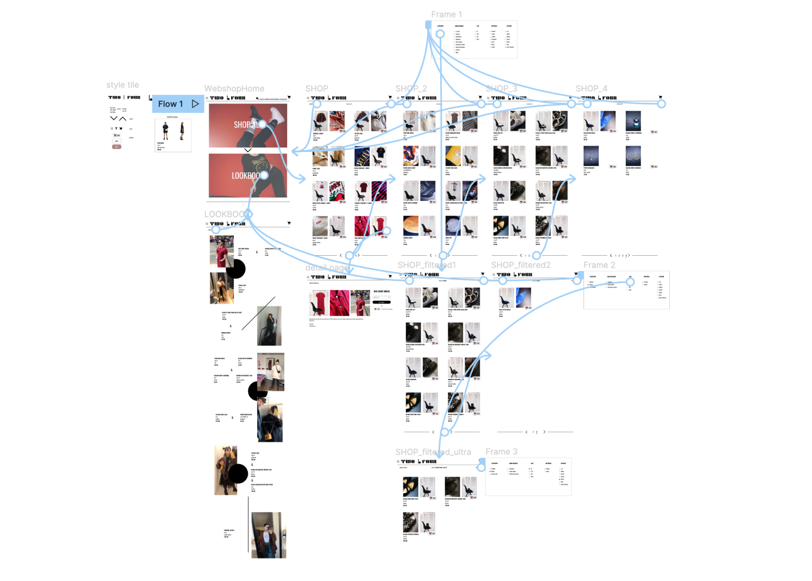

In the first year of UXD at The Hague University of Applied Sciences, we had an Interaction Design course. It
consisted of multiple short assignments, out of which this one was the most fun.
It was also very fast paced, and in one week we had to sketch out both a web and mobile version for a personal
web shop.
The assignment was quite intricate and it concentrated around making this personal web shop with items from our
own possession. From taking the photographs to picking the grid, the decisions were completely ours to make.
I started the concept from picking two photos I had made one year before, that contained predominantly red and
black, so they pretty much gave me the colour palette. Afterwards, I decided on a name and a logo and from then
on, it all flew quite smoothly.
The main objectives were filters and pagination.
